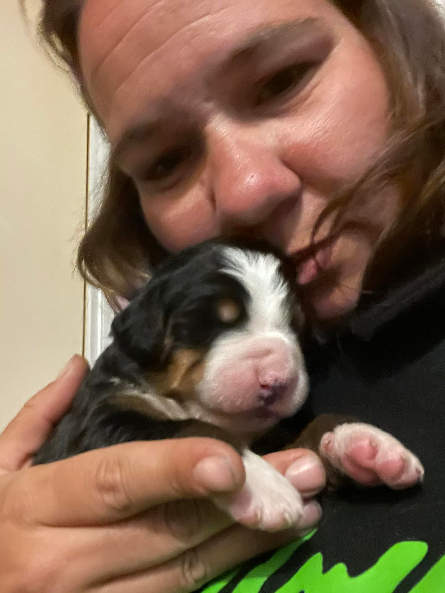
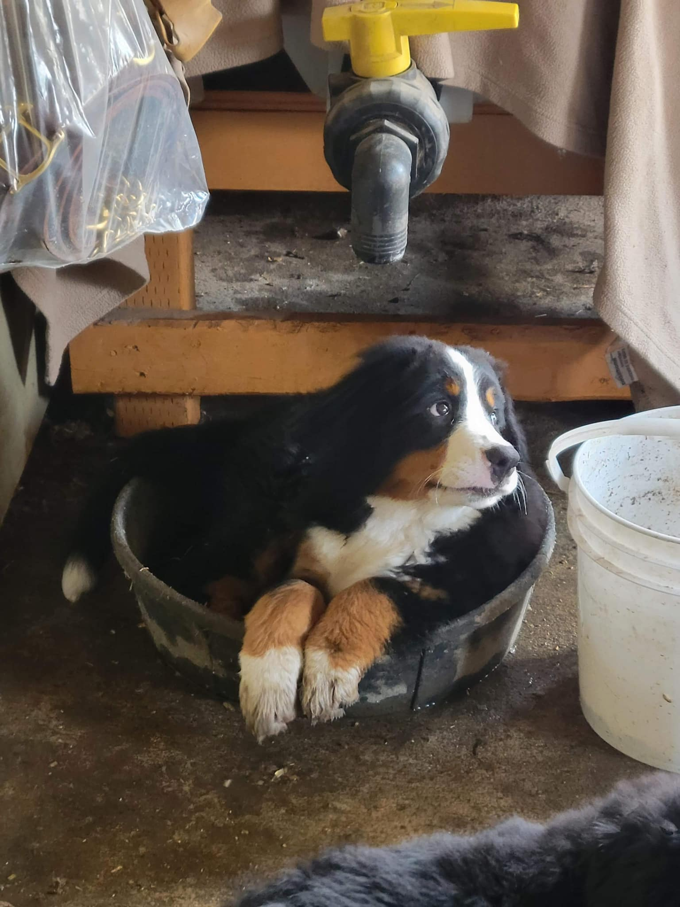
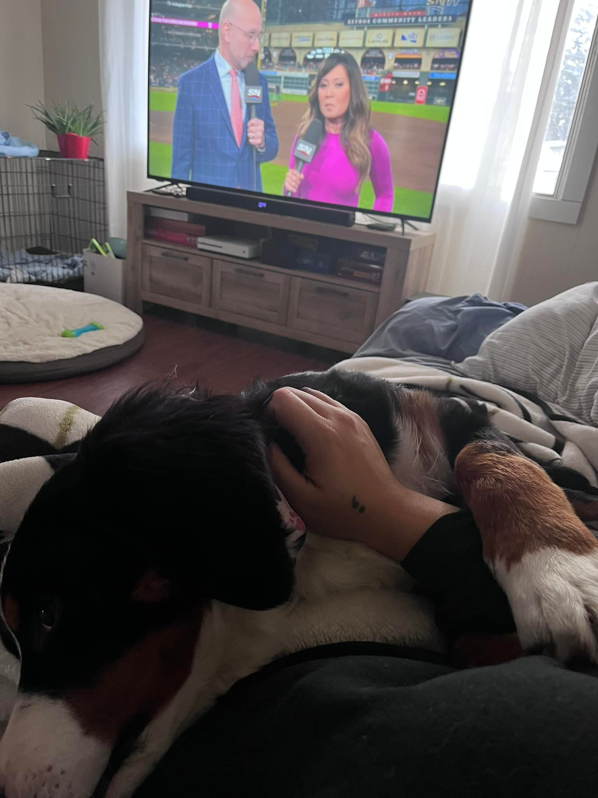
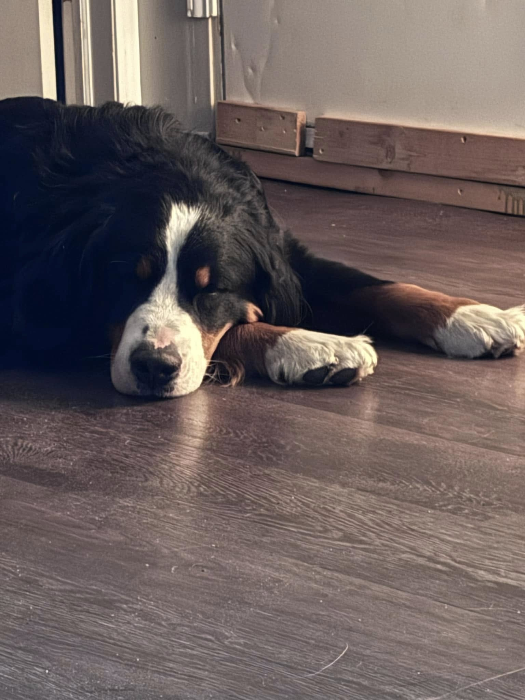
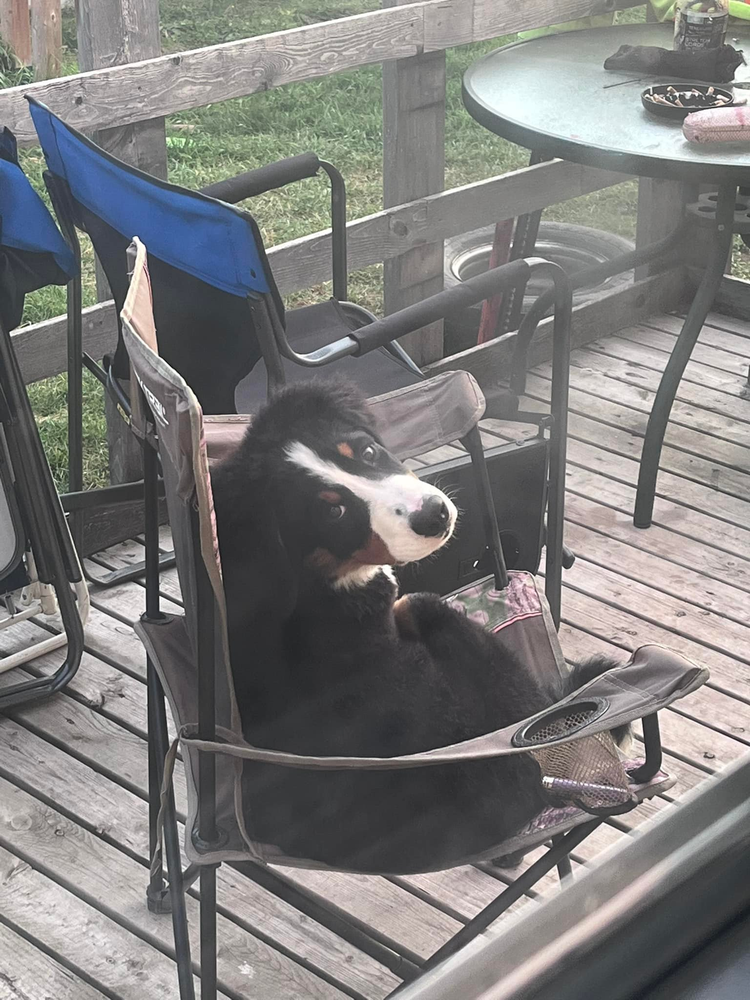
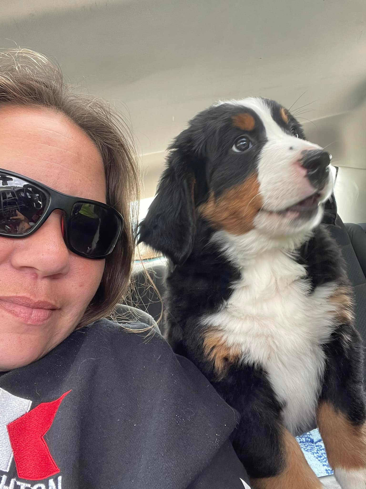
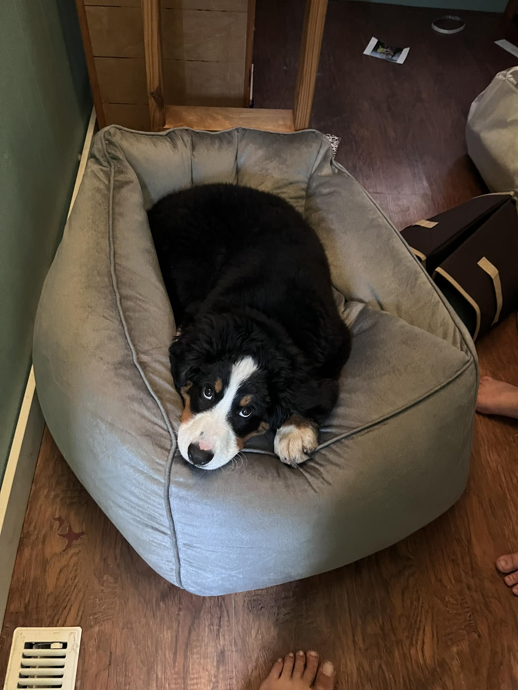
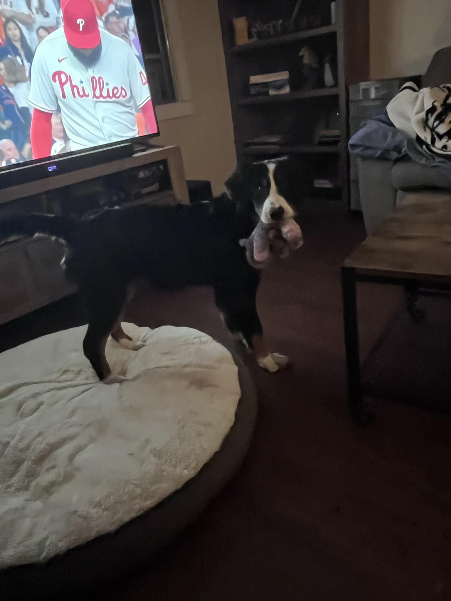
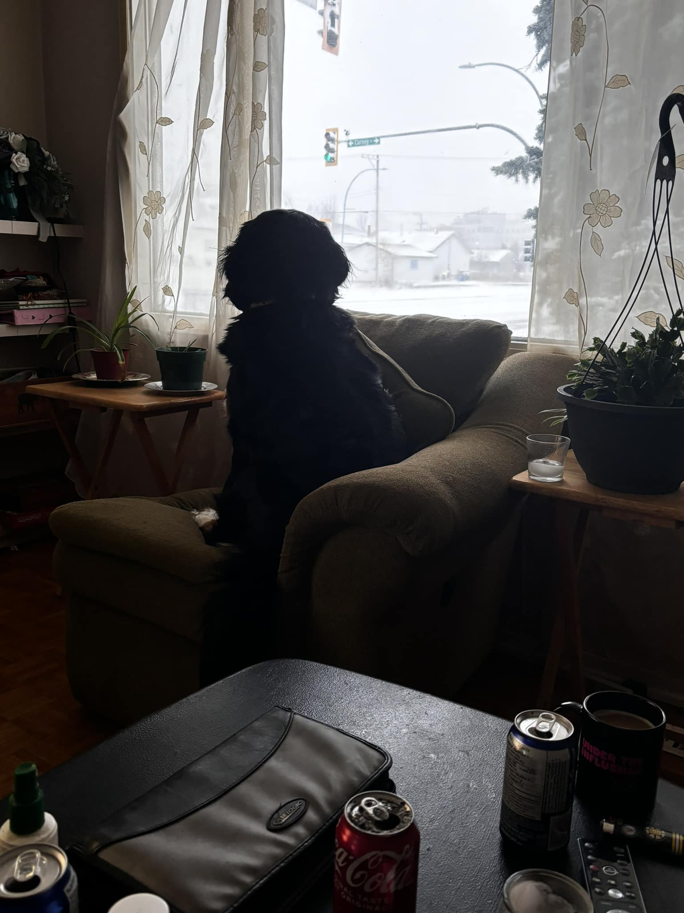

Discription about Kilo
My dogs name is Kilo and she was born on May 15,2023. She is a perbread Bernese Mountain dog. Kilo is going to be 3 years old and is still very much like a puppy. Before I got Kilo I had to do alot of research about her breed as there are many things that can go wrong with a Berner (I will get to those later with links on those issues).
 Kilo was the runt of her litter, and the only one who's face was all white. Her nose was so small and pink and her pads were pink except for one toe pad it was black. Kilo was so small that she fit in the palm of my hand,and she would cry unless she was being held.
Kilo was the runt of her litter, and the only one who's face was all white. Her nose was so small and pink and her pads were pink except for one toe pad it was black. Kilo was so small that she fit in the palm of my hand,and she would cry unless she was being held.
 Kilo's breed is a very loving, playful, loyal to their person. So far Kilo has had one heck of a life, from near death experinces, to hunting, quadding, and even on her brakeout runs. Kilo has grown so much in the last 2.5 years, she is the most loving, and very needy, but my family and I love her so much. She can be way to needy at times but that comes from everything she has been through in her short life.
 In Kilo's life span she has faced death two times, has been the support for myself when I have a Bipolar episode, has always been there for my husband through his addiction, and for my daughter when she is having a bad day. The first time Kilo faced death she was only 9 months old, she got in to some perscription medication (this breed will eat anything and everything) and stopped eating and started to intake exessive amounts of water. Kilo knew something was wrong with her and that she needed to flush out her system. After 5 days we finally found a vet that could see her. The vet was suprised that our dog was still alive after that many days. Kilo made it out of that with kidney failure, but after 24 hours in the vet and a new food and medication Kilo survived.
 Kilo's second time facing death was when she was 2 years old. She stopped eating, stopped drinking and had become dehydrated. When my husband and I took her to the vet we asked to do an exploritory surgery as we thought it was a blockage due to the fact she stopped eating and could not have a bowel movement. The vet said no we will run a dye through her to make sure she does not have a blockage. Well that was a waste of time and money as the vet said there was no blockage, but Kilo was starting to cry at all times even when she was sleeping. My husband and I were getting ready to bring her back to the vet to have her put to sleep. I let her outside so she could use the washroom and to hang out in the sun, and when she was done being outside she was so excited and running around. She was back to her old self being all hyper and loveable. I went out to clean up the yard and that is when I seen that she finally passed the blockage. The thing that was killing my baby girl was a toy ball that someone threw over our fence, it was one that you would find in a kids ball pit.
Picture's of Kilo's favorite things to do
    Some of the things Kilo likes to do
- Chilling on the couch or in chairs
- Going for car rides
- Playing with her toys
- Watching traffic or the weather
- Stealing pop and wateer bottles
Things that can go wrong with a Berner
- Joint problems
- Hip Dysplasia
- Elbow Dysplasia
- Stomach issues
- Bloat
- Thyroid Disorders
- Bowel Disorders
- Flipped Stomach
- Cancer
- Mast cell tumors
- Eye disorders
- Cataracts
- Progressive retinal atrophy